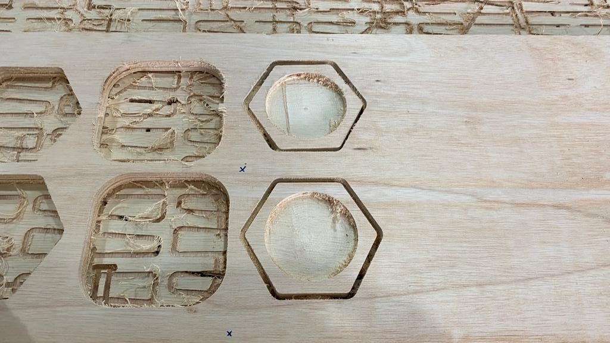
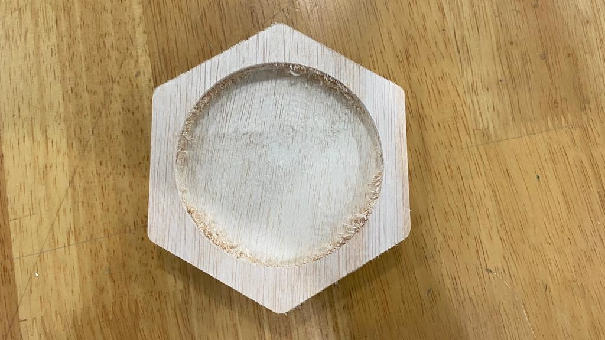

2D machining
In this segment, we will be doing Computer Numerical Control (CNC) to cut out a life sized piece of furniture using a large scale CNC machine which enables it to cut stock materials upwards of 1200mm/700mm/15-25mm.
Before we start cutting out the pieces of our furniture design, we had to pass a competency test first, to familiarize ourselves with using the mcahine.
Steps to operate the CNC Machine
- Put the stock on the bed.
- Using an electric drill, screw on some screws at the corners and sides of the stock.
- There should be a sacrificial layer of wood under the stock.
- Import the design of your choice into the computer.
- Set the operations u want done the your designs ie. pocketing, contouring... and generate the G-code.
- Simulate the cutting on the computer and make sure everything is correct.
- Set the X and Y axis, and set the Z axis using the probe.
- Switch on the dust collector.
- Start the cutting process.
- Remove the tabs using a sharp tool.
- Clean up the product using sandpaper.
Finished Product-Mug Holder
 
Furniture Design
I first designed a stool on Fusion360 taking dimensions from a stool i had at home.
Final Design
I also had to download a new tool into fusion 360 to add dogbone fillets onto sharp edges in my design.The reason so is due to the fact that the inner corners of our designs can never be sharper than the diameter of the cutting tool. This is because the router bits are round hence, it is not possible to get orthogonal corners at perfect right angles when cutting out the sheet materials like plywood with a CNC machine, so instead, these corners will be rounded inwards.
The next step was to export the sides of the stool as a DXF and to prepare it for cutting.